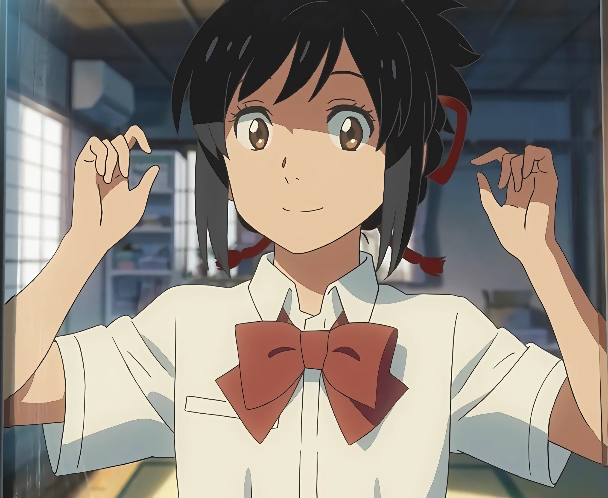

Characters

Taki Tachibana (立花 瀧)
Voiced by: Ryunosuke Kamiki (Japanese); Michael Sinterniklaas (English)
A high school boy in Tokyo. He is a 17-year-old student in his third year at Tokyo Metropolitan High School. He is a talented sketch artist and has aspirations to be an architect. He is short-tempered but well-meaning and kind. He spends time with Miki Okudera, working in a part-time job as a waiter at the Italian restaurant "Il Giardino delle Parole".[c] A running gag in the film is that whenever Taki wakes up and realizes he has swapped bodies with Mitsuha that day, he immediately begins to fondle "his" breasts in amazement, only stopping once Mitsuha's sister, Yotsuha, sees her. Mitsuha teasingly calls him out for the habit when they meet in person for the first time during twilight. Taki later appeared in Shinkai's next film Weathering with You. He lives with his father, who works at Kasumigaseki; Shinkai states, "I think his mother divorced his father a few years ago."

Mitsuha Miyamizu(宮水 三葉)
Voiced by: Mone Kamishiraishi (Japanese); Stephanie Sheh (English)
A high school girl dissatisfied with her life in Itomori, a mountainous and rural town of Gifu Prefecture, who was born on December 1, 1996. She is a 17-year-old student in her second year at Itomori High School, but in reality is three years older than Taki. Mitsuha is usually seen with her hair tied up with a dark red braided ribbon that she made by hand herself. She and her sister are maidens of the family shrine. After her mother died, her father abandoned the shrine to pursue politics. She lives with her maternal grandmother, Hitoha, and her younger sister, Yotsuha, who is in elementary school. Mitsuha wishes to have a better life in Tokyo than having unavoidable encounters in the small town with her estranged father, the mayor, as well as her role as a shrine maiden (miko) in rituals for her mother's family shrine including making kuchikamizake, an ancient traditional way of making sake by chewing rice and spitting it back out to be fermented - all of which attracts mockery and disdain from her classmates. When switching bodies with Taki, Mitsuha forbids him from looking at or touching her body. Mitsuha later appeared in Shinkai's next film Weathering with You.
Her birthday contradicts with the film's setting that she is 17 years old in the summer of her second year in high school, because as Shinkai says, "In their mind, they both kind of assumed that they were both born on December 1."
Katsuhiko "Tessie" Teshigawara (勅使河原 克彦)
Voiced by: Ryo Narita (Japanese); Kyle Hebert (English)
One of Mitsuha's classmates; as of 2013, he is 17 years old[d] and has a crush on Mitsuha. His nickname is "Tessie" ("Tesshi" in the dub). He is the son of the president of a local construction company, Teshigawara Construction. He is a lover of the monthly occult magazine MU (ja) and a mechanical geek. He has a 50-50 love/hate relationship with his hometown,[e] Itomori, and from his own perspective, he initiates concrete measures to improve the town's situation,[f] which earns him the sympathy of Taki (physically, Mitsuha).
In the epilogue, he talks about his upcoming marriage to Sayaka.Teshigawara is named after Shoko Aizawa's middle school friend, Teshigawara, who appears in the seventh episode of Shinkai's novel The Garden of Words.[9][10]
Sayaka Natori (名取 早耶香)
Voiced by: Aoi Yūki (Japanese); Cassandra Morris (English)
One of Mitsuha's classmates and her best friend; as of 2013, she is 17 years old.[d] She has a calm but nervous personality and has a crush on Tessie. She is part of the school's radio broadcasting club, so she is tasked by Taki and Tessie with broadcasting the false emergency evacuation alert. Her sister, who works at the town hall, makes a brief appearance in the film.Sayaka is named after a friend of Shoko Aizawa's from middle school, who appears in the seventh episode of Shinkai's novel The Garden of Words.
Tsukasa Fujii (藤井 司)
Voiced by: Nobunaga Shimazaki (Japanese); Ben Pronsky (English)
A classmate and friend of Taki. He has a cool personality and, like Taki, is interested in architecture. He works part-time at the same restaurant as Taki and Takagi. He worries about Taki whenever Mitsuha inhabits his body. In his last scene, he is wearing a ring on his left-hand finger; and when asked about it, Shinkai said, "It's just a backstory, but I believe Tsukasa is engaged to Okudera."
Miki Okudera (奥寺 ミキ)
Voiced by: Masami Nagasawa (Japanese); Laura Post (English)
A university student, one of Taki's friends, and his co-worker at the Italian restaurant "Il Giardino delle Parole". She is a beautiful and fashionable college girl who is popular with male waiters. She develops closer feelings for Taki when Mitsuha inhabits his body. She is a smoker, which Tsukasa discovers when they spend a night together while accompanying Taki on his search for Mitsuha. She is more commonly referred to as Ms. Okudera (Okudera-senpai) by her colleagues. When she meets Taki in 2021 after a long time, she is wearing an engagement ring and tells him that she is getting married soon. According to Shinkai: "It's just a backstory, but I believe that Tsukasa is engaged to Okudera."[9] In the original novel, she is described as working at the Chiba

Hitoha Miyamizu (宮水 一葉)
Voiced by: Etsuko Ichihara (Japanese); Glynis Ellis (English)
The head of the Miyamizu[note 2] family shrine in Itomori[note 3], and the maternal grandmother of Mitsuha and Yotsuha. She was 82 years old as of 2013.[d] Her favorite family tradition is kumihimo (thread weaving). She educates her grandchildren about the history and traditions of the shrine. Her daughter died peacefully after an illness and her son-in-law worked as a politician. It is revealed in the manga adaptation that Hitoha is alive as of 2021.
Yotsuha Miyamizu (宮水 四葉)
Voiced by: Kanon Tani (Japanese); Catie Harvey (English)
Mitsuha's younger sister with a strong personality. She was 9 years old in the fourth grade as of 2013.[d] She helps her grandmother and sister preserve the family tradition at the shrine. She believes Mitsuha is somewhat crazy but loves her anyway. She participates in creating both kumihimo and kuchikamizake. Yotsuha attended high school at the end of the film.